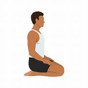

Follow us!
-

Suryanamskar
-

Yoga Asanas
-

Sukhasana
This is a great pose for beginners to use as an assessment,” says Gwen Lawrence, yoga coach for a number of sports teams, athletes, and celebrities. “Just sitting on the floor gives you a perfect way to see and feel the external rotation on the legs.” This pose also boosts back flexibility and can help relieve stress
-

svanasana
“Child’s Pose is one of the most healing yoga poses, and it’s my favorite of them all,” says Cullis. “It awakens the connection between the breath and body and sends calming energy through all the muscles. It’s an opportunity to get grounded, go inward, and to come out of your busy mind and into your body by awakening your breath from the inside out.” Child’s Pose is a great way to take a break and relax during your yoga practice
-

Balasana
“It awakens the connection between the breath and body and sends calming energy through all the muscles. It’s an opportunity to get grounded, go inward, and to come out of your busy mind and into your body by awakening your breath from the inside out.”Pose is a great way to take a break and relax during your yoga practice, or anytime you feel tired or overwhelmed.
-

Paschimottanasana
Paschimottanasana, or Seated Forward Bend, is a yoga pose where you sit with straight legs and bend forward to touch your toes, stretching the entire back of the body from head to heels. The name is Sanskrit for "west" (back) and "intense stretch". This pose deeply stretches the hamstrings, spine, and calves, aiding digestion and calming the mind. improved spinal and hamstring flexibility, better digestion, tones abdominal organs
-
Vakrasana
Vakrasana yoga is an amazing spinal twist pose. Vakrasana is a combination of two words, Vakra means “twisted” and asana means a “yoga posture.” When you practise Vakrasana steps, you experience a suitable twisting of the spine Vakrasana makes the body flexible and reduces belly fat and also helps in improving digestion by regulating digestive juices.
-
Bhujangasana
It is known as the corrector of the curvature and makes the spine flexible. The curve structure of the asana massages the deep back muscles, spine and nerves. It can be a great asana for people dealing with arthritis of the lower back and lower back pains. It relieves menstrual problemsby stretching the uterus and ovaries. It releases stress through invigorating adrenal glands and kidneys.
-

Vajrasana
Vajrasana, also known as the Thunderbolt Pose or Diamond Pose, is a kneeling yoga posture that promotes digestion and meditation. In this pose, you sit back on your heels with your knees together and your spine straight. It is often practiced after meals to aid digestion and is considered a grounding pose that helps calm the mind. Vajrasana stretches the thighs, knees, and ankles while improving posture and concentration. It can help alleviate digestive issues like bloating and constipation.
-
Palakasana
Phalakasana is the Sanskrit name for the Plank Pose, a foundational yoga posture where the body is held in a straight, plank-like line from head to heels, supported by the hands and toes.It's a full-body exercise that builds strength and endurance in the core, arms, shoulders, and legs.
-
a foundational standing yoga posture that improves balance, stability, and concentration by balancing on one leg while the other foot is placed on the inner thigh of the standing leg, with hands in prayer at the chest or extended overhead.Benefits include strengthening legs and spine, improving posture, and promoting mental calmness.
-

sevasana
The shava-asana is also known as the “mrta-asana“. This pose gets its name from the recumbent posture of a dead body. It is a position of rest and relaxation, and is usually practiced towards the end of a yoga session – a session that typically begins with activity and ends in rest. a space or pause when deep healing can take place.
-

yoga

Meditation
“Gently close your eyes, release every thought, and drift into the music — nothing else in universe exists.”